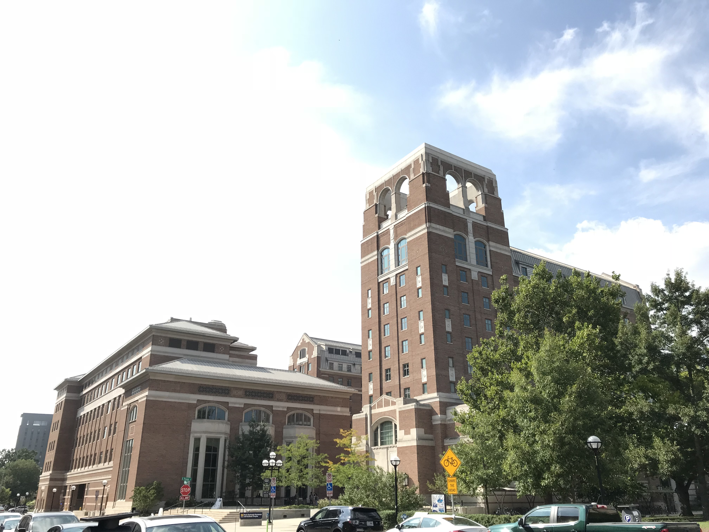

University of Michigan School of Information (UMSI)
Landmark Type
Graduate School (housed within North Quadrangle, a student learning/living residential building)
Year Established
1969
Introduction
The University of Michigan School of Information is a graduate school offering baccalaureate, magisterial, and doctoarl degrees in information science and informatics. It is housed within North Quadrangle, a student learning and living residential building, one of the newer buildings on central campus.
The School of Information has its roots in library science, and has grown to be a major i-School in the United States, with strong research and teaching focused on thead in the areas of human-computer interaction, data analytics, and library science.
The North Quadrangle provides a warm home for its residents and the students of UMSI, with a student dining hall, multiple meeting rooms and faculty offices located within the building.
Official Website
Photos
The North Quad at Night
The North Quad on a Snowy Day